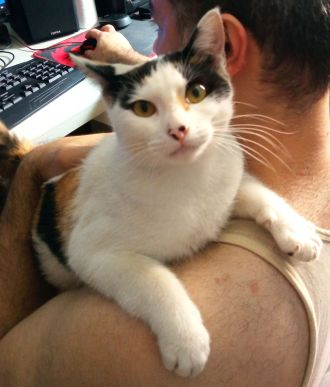

Vitória
Minha caçula foi adotada em 06 de Janeiro deste ano depois de uma promessa que fiz a São Francisco de Assis, a vi em um muro cheio de caco de vidro e prometi que se ela ficasse bem eu adotaria e a chamaria de Vitória, três dias depois ela apereceu sã e salva no meu portão, quando eu vi já estava com ela dentro de casa.
Vitória entrando no balde de ração